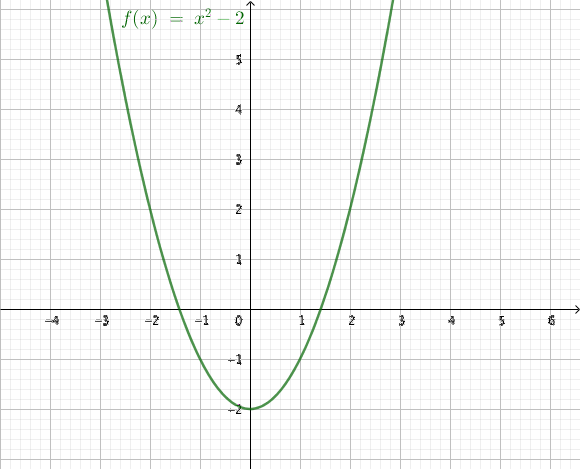

16. Rotfunktionen och ekvationer med rötter
I grundskolan har du tidigare bekantat dig med kvadratrötter. Nu är det dags att bilda funktioner av dem och börja analysera hur de beter sig.
Vi tar och ritar funktionen \( f(x)=\sqrt{x} \).
Exempel 1 För vilka värden på \( x \) gäller att \( \sqrt{x-2}=4 \)?
Lösning
Radikanden, det som är under rotteckent, är definierad då \( x-2 \geq 0 \Leftrightarrow x \geq 2 \).
Vi tar och löser
\( \begin{array}{rcll} \sqrt{x-2} & = & 4 & \textrm{ genom att kvadrera.} \\ (\sqrt{x-2})^2 & = & 4^2 \\ x-2 & = & 16 \\ x & = & 18 \\ \end{array} \)
Eftersom \( 18 > 2 \) duger lösningen.
Exempel 2 Bestäm skärningspunkten för funktionerna \( f(x)=\sqrt{x+2} \) och \( g(x)=\sqrt{-x+6} \).
Lösning
Vi börjar med att undersöka när funktionerna är definierade.
\( f \) är definierad då \( x+2 \geq 0 \Leftrightarrow x \geq -2 \) och \( g \) är definierad då \( -x+6 \geq 0 \Leftrightarrow x \leq 6 \).
Sedan löser vi ekvationen \( f(x)=g(x) \):
\( \begin{array}{rcll} \sqrt{x+2} & = & \sqrt{-x+6} & \textrm{ Vi kvadrerar} \\ (\sqrt{x+2})^2 & = & (\sqrt{-x+6})^2 \\ x+2 & = & -x+6 \\ 2x & = & 4 \\ x & = & 2 \\ \end{array} \)
\( x=2 \) duger som lösning eftersom \( -2 \leq 2 \leq 6 \).
Man kan även bestämma de gemensamma punkterna för \( f(x)=\sqrt{x+2} \) och \( g(x)=\sqrt{-x+6} \) genom att undersöka radikanderna. Då får vi att \( x+2=-x+6 \Leftrightarrow x=2 \).
Fundera, gäller följande påståenden:
- Om \( a^2=b^2 \) så gäller att \( a=b \).
- Om \( a^3=b^3 \) så gäller att \( a=b \).
Motivering
Kvadraten gäller inte. Ta till exempel \( 4 \) och \( -4 \). Bägge talen i kvadrat har värdet 16 men ändå är inte \( 4 = -4 \) .
För kubiken gäller det däremot.
Eftersom det inte gäller för kvadraten så måste vi vara på alerten att vi inte får falska rötter då vi löser ekvationer med kvadratrötter.
Exmepel 3 Bestäm de gemensamma punkterna för \( f(x)=\sqrt{x+3} \) och \( y=x+1 \).
Lösning
\( f \) är definierad då \( x+3 \geq 0 \Leftrightarrow x \geq -3 \).
Vi är intresserade av \( \sqrt{x+3}=x+1 \) som vi löser genom att kvadrera.
\( \begin{array}{rcll} (\sqrt{x+3})^2 & = & (x+1)^2 \\ x+3 & = & x^2+2x+1 \\ x^2+x-2 & = & 0 & \textrm{ Rotformeln ger:}\\ \\ x & = & \dfrac{-1\pm\sqrt{1^2-4\cdot 1(-2)}}{2\cdot 1}\\ \\ & = & \dfrac{-1\pm 3}{2}\\ \end{array} \)
Rötterna är \( x=\dfrac{-1-3}{2}=-2 \) och \( x=\dfrac{-1+3}{2}=1 \).
Då vi jämför med funktionernas grafer märker vi att de endast skär en gång. Det som vi måste göra är att testa rötterna som vi fått.

Vi testar rötterna: \( \sqrt{-2+3}=\sqrt{1}\not=-2+1 \) och \( \sqrt{1+3}=\sqrt{4}=2=1+1 \). Vi har alltså endast en gemensam punkt. Då \( x=1 \) är \( y=1+1=2 \).
Den gemensamma punkten är \( (1,2) \).
Exempel 4 Bestäm nollställena för funktionen \( f(x)=\sqrt{2x-2}-x+1 \).
Lösning
Funktionen är definierad då \( 2x-2 \geq 0 \Leftrightarrow x \geq 1 \).
Vi löser ekvationen
\( \begin{array}{rcll} \sqrt{2x-2}-x+1 & = & 0 \\ \sqrt{2x-2} & = & x-1 & \mid (\quad)^2 \\ 2x-2 & = & (x-1)^2 \\ 2x-2 & = & x^2-2x+1 \\ x^2-4x+3 & = & 0 & \textrm{ Rotformeln}\\ x & = & \dfrac{4\pm \sqrt{(-4)^2-4\cdot1\cdot3}}{2\cdot 1} \\ & = & \dfrac{4\pm2}{2} \end{array} \)
Rötterna är \( x=\dfrac{4-2}{2}=1 \) och \( x=\dfrac{4+2}{2}=3 \).
Då vi löser ekvationer med rötter så måste vi börja med att bestämma definitionsmängden. Sedan måste vi vara vara på alerten och fundera över att kan det komma in falska rötter bland de lösningar som vi får.
Ett bra sätt är att testa rötterna eller att jämföra dem med definitionsmängden.
Uppgifter
- Rita funktionen \( \sqrt{x+1} \) på papper utan att använda räknare. Rita den på räknarprogram och jämför din funktion med räknarens.
Vi får något som påminner om

Bestäm definitionsmängden för följande rötter.
Påstående \( x > -1 \) \( x > 0 \) \( x > 1 \) \( \sqrt{x+1} \) \( \sqrt{2x+2} \) \( \sqrt{x-1} \) \( \sqrt{x} \) \( \sqrt{3x-3} \) \( \sqrt{3x} \) Det som är under roten skall vara positivt.
Påstående \( x > -1 \) \( x > 0 \) \( x > 1 \) \( \sqrt{x+1} \) \( \sqrt{2x+2} \) \( \sqrt{x-1} \) \( \sqrt{x} \) \( \sqrt{3x-3} \) \( \sqrt{3x} \) - För vilka värden på \( x \) gäller att \( \sqrt{x-3}=5 \)?
Kvadratroten är definierad då \( x-3 \geq 0 \Leftrightarrow x \geq 3 \).
Vi löser ekvationen
\( \begin{array}{rcll} \sqrt{x-3} & = & 5 & \textrm{ Kvadrerar}\\ (\sqrt{x-3})^2 & = & 5^2\\ x-3 & = & 25 \\ x & = & 28\\ \end{array} \)
- För vilka värden på \( x \) gäller att \( \sqrt{2-x}=2 \)?
Kvadratroten är definierad då \( 2-x \geq 0 \Leftrightarrow x \leq 2 \).
Vi löser ekvationen
\( \begin{array}{rcll} \sqrt{2-x} & = & 2 & \textrm{ Kvadrerar}\\ (\sqrt{2-x})^2 & = & 2^2 \\ 2-x & = & 4 \\ x & = & -2 \\ \end{array} \)
- Vilken punkt ger funktionsvärdet -1?
Eftersom värdet av en kvadratrot alltid är positiv saknar ekvationen lösningar.
Löser vi ekvationen, utan att fundera får vi:
\( \begin{array}{rcll} \sqrt{2-x} & = & -1 & \textrm{ Kvadrerar}\\ (\sqrt{2-x})^2 & = & (-1)^2 \\ 2-x & = & 1 \\ x & = & 1 \\ \end{array} \)
Märk att vi inte får kvadrera eftersom bägge led inte är positiva.
- Vilken punkt ger funktionsvärdet -1?
- Bestäm definitionsmängen för följande funktioner.
- \( f(x)=\sqrt{4-x^2} \)
\( f \) är definierad då \( 4-x^2 \geq 0 \). Alltså då \( -2 \leq x \leq 2 \).
- \( f(x)=\sqrt{9-x^2} \)
\( f \) är definierad då \( 9-x^2 \geq 0 \). Alltså då \( -3 \leq x \leq 3 \).
- \( f(x)=\sqrt{7-x^2} \)
\( f \) är definierad då \( 7-x^2 \geq 0 \). Alltså då \( -\sqrt{7} \leq x \leq \sqrt{7} \).
- \( f(x)=\sqrt{4-x^2} \)
- Bestäm definitionsmängen för följande funktioner.
- \( f(x)=\sqrt{x^2-4} \)
\( f \) är definierad då \( x^2-4 \geq 0 \). Alltså då \( x \leq -2 \) eller då \( x \geq 2 \).
- \( f(x)=\sqrt{2x^2-6} \)
\( f \) är definierad då \( 2x^2-6 \geq 0 \). Alltså då \( x \leq -\sqrt{3} \) eller då \( x \geq \sqrt{3} \).
- \( f(x)=\sqrt{x^2-x} \)
\( f \) är definierad då \( x^2-x \geq 0 \). Alltså då \( x \leq 0 \) eller då \( x \geq 1 \).
- \( f(x)=\sqrt{x^2-4} \)
- Bestäm skärningspunkten för funktionerna \( f(x)=\sqrt{2x+2} \) och \( g(x)=\sqrt{-x+5} \).
Lös ekvationen \( \sqrt{2x+2}=\sqrt{-x+5} \) genom att kvadrera eller genom att undersöka radikanderna.
\( 2x+2=-x+5 \Leftrightarrow 3x=3 \Leftrightarrow x=1 \). \( f(1)=\sqrt{-1+5}=2 \).
Punkten är \( (1,2) \).
- För vilket värde på \( x \) är funktionsvärdena för \( f \) och \( g \) samma då \( f(x)=\sqrt{x+2} \) och \( g(x)=\sqrt{-2x} \)?
Lös ekvationen \( \sqrt{x+2}=\sqrt{-2x} \) genom att kvadrera eller genom att undersöka radikanderna.
\( x+2=-2x \Leftrightarrow 3x=-2 \Leftrightarrow x=-\dfrac{2}{3} \).
- Bestäm de gemensamma punkterna för \( f(x)=\sqrt{x+2} \) och \( y=2x-2 \).
Vi skall lösa ekvationen \( \sqrt{x+2}=2x-2 \) genom att kvadrera. Vi får \( x+2=(2x-2)^2 \) som har rötterna \( x=\dfrac{1}{4} \) och \( x=2 \).
Då vi testar rötterna märker vi att endast \( x=2 \) är en rot. Punkten är \( (2,2) \).
- Bestäm de gemensamma punkterna för \( f(x)=\sqrt{x+4} \) och \( y=\dfrac{1}{5}x+2 \).
Vi skall lösa ekvationen \( \sqrt{x+4}=\dfrac{1}{5}x+2 \) genom att kvadrera. Vi får \( x+4=(\dfrac{1}{5}x+2)^2 \) som har rötterna \( x=0 \) och \( x=5 \). Vi testar bägge rötter och konstaterar att båda duger.
De gemensamma punkterna är \( (0,2) \) och \( (5,3) \).
- Bestäm nollställena för funktionen \( f(x)=\sqrt{2x-3}-x+1 \).
\( f \) är definierad då \( 2x-3 \geq 0 \Leftrightarrow x \geq \dfrac{3}{2} \).
Vi löser ekvationen
\( \begin{array}{rcll} \sqrt{2x-3}-x+1 & = & 0 \\ \sqrt{2x-3} & = & x-1 & \mid (\quad)^2 \\ 2x-3 & = & x^2-2x+1 \\ x^2-4x+4 & = & 0 \\ \end{array} \)
som har roten \( x=2 \).
- Räkna igenom uppgiften och korrigera felen i följande uträkning då uppgiften är:
Bestäm skärningspunkterna för \( f(x)=\sqrt{x+1} \) och \( y=-x-1 \).
\( \begin{array}{rclll} \sqrt{x+1} & = & -x-1 & \mid (\quad)^2 & \text{(1.)}\\ (\sqrt{x+1})^2 & = & (-x-1)^2 & & \text{(2.)}\\ x+1 & = & x^2+2x+1 & & \text{(3.)}\\ x^2+x & = & 0 & & \text{(4.)}\\ x(x+1) & = & 0 & & \text{(5.)}\\ \end{array} \)
Alltså \( x =0 \) och \( x+1=0 \Leftrightarrow x=-1 \).
Skärningspunkterna är \( (-1,0) \) och \( (0,1) \).
Allt är helt korrekt löst ända fram till nollställena \( x=0 \) och \( x=-1 \).
Dessa rötter måste vi testa! Eller jämföra med definitionsmängden.
\( x=-1: \sqrt{-1+1} =0 \) och \( -(-1)-1 =0 \). Den stämmer.
\( x=0: \sqrt{0+1} =1 \) och \( -0-1 =-1 \). Den stämmer inte.
Skärningspunkten är \( (-1,0) \).
- Bestäm nollställena för funktionen \( f(x)=\sqrt{2x-1}+x \).
Då vi löser \( \sqrt{2x-1}+x=0 \) får vi att \( x=1 \). Då vi testar roten genom att sätta in värdet i funktionen får vi att \( f(1)=2 \). Vi har fått en falsk rot.
Funktionen saknar nollställen.
- För vilka värden på \( a \) skär linjen \( y=ax+1 \) funktionen \( f(x)=\sqrt{x+3} \) i alla fall två gånger?
Vi är intresserade av när \( \sqrt{x+3}=ax+1 \). Kvadratroten är definierad då \( x+3 > 0 \Leftrightarrow x > -3 \).
Då \( a=0 \) får vi att \( \sqrt{x+3} = 1 \Leftrightarrow x=-2 \) som inte har två lösningar, endast en.
Då \( ax+1 > 0 \) och \( x > -3 \). Vi kvadrerar ekvationen i början och får att \( x+3=a^2x^2+2ax+1 \) som vi skriver som \( a^2x^2+(2a-1)x-2=0 \).
\( b^2-4ac = (2a-1)^2-4\cdot a^2(-2) > 0 \) eftersom vi vill ha två skärningspunkter. Denna olikhet uppfylls för alla värden på \( a \).
Däremot gäller att \( ax+1 > 0 \) och \( x > -3 \), alltså \( a(-3)+1 > 0 \) som har lösningen \( a < \dfrac{1}{3} \).
När vi kombinerar allt får vi att \( 0 < a < \dfrac{1}{3} \).